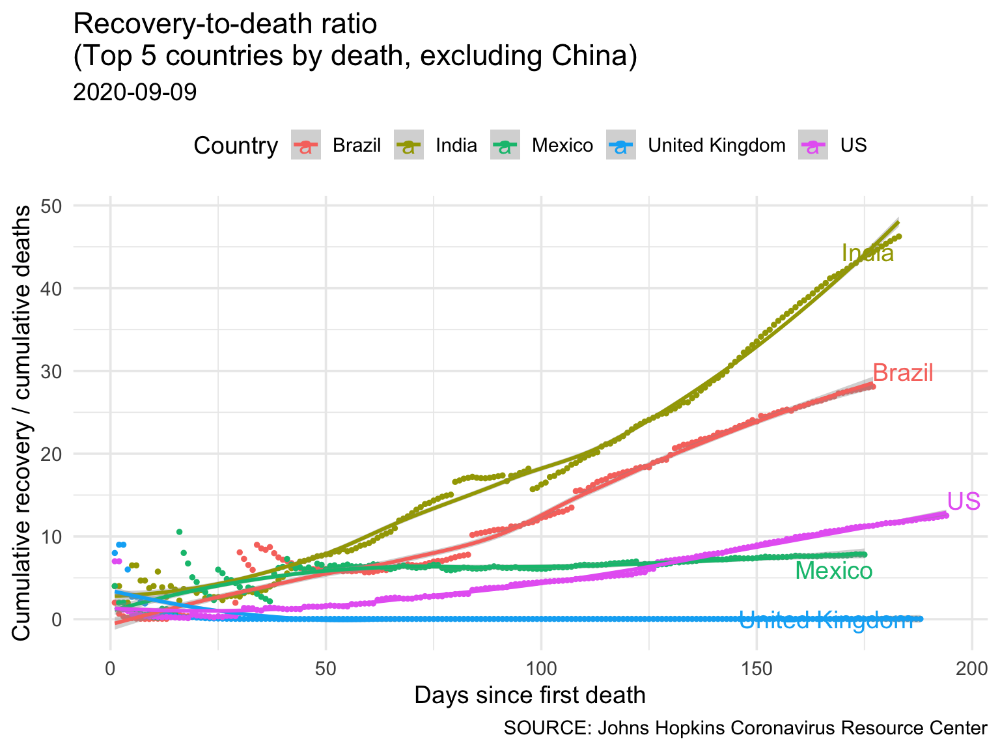

Report 1 World
1.1 Confirmed Cases
Report last updated: 2020-04-01
Data last refreshed: : 2020-03-31

| country | Confirmed |
|---|---|
| US | 188172 |
| Italy | 105792 |
| Spain | 95923 |
| Germany | 71808 |
| France | 52827 |
| Iran | 44605 |
| United Kingdom | 25481 |
| Switzerland | 16605 |
| Turkey | 13531 |
| Belgium | 12775 |
| Bangladesh | 51 |
1.2 Deaths

| country | Deaths |
|---|---|
| Italy | 12428 |
| Spain | 8464 |
| US | 3873 |
| France | 3532 |
| Iran | 2898 |
| United Kingdom | 1793 |
| Netherlands | 1040 |
| Germany | 775 |
| Belgium | 705 |
| Switzerland | 433 |
| Bangladesh | 5 |
1.3 Recovery-to-death ratio
 The recovery to deaths ratio (RDR) is calculated as
\[ RDR = \frac{\# Cumulative \,\, daily \,\, recovered}{\# Cumulative \,\, daily \,\, deaths} \]
How to interpret: The ratio of cumulative number of patients recovered divided by the cumulative number of deaths over time can tell the proportion of people recovering compared to dying. An upward trend may indicate more recovery than deaths.
1.4 3-day % changes

The percent change is calculated as
\[
PC = \frac{New - Original}{Original} * 100
\] where New is the number of cases on a given date, and Original is the number 3 days prior to that.
How to interpret: The 3-day percent change tells how much does a metric have changed (%) compared to what it was 3-days ago. A downward trending line suggests a slow growth.